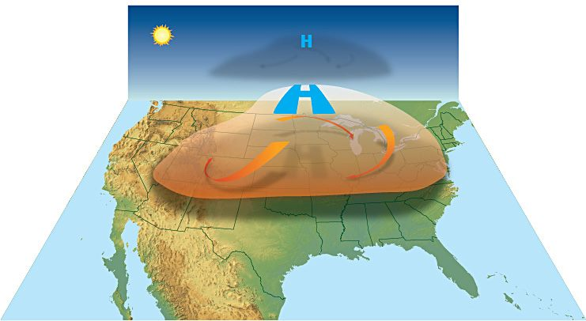

橋사회
사회인천 차이나타운 140년… 1만 명으로 줄어든 한국 화교, 그 깊은 뿌리
1884년 인천화상조계 이래 140년. 인구는 8만에서 1만으로 줄었지만, 역사·문화 자산과 관광 가치는 오히려 커지고 있다.
1884년 인천화상조계 이래 140년. 인구는 8만에서 1만으로 줄었지만, 역사·문화 자산과 관광 가치는 오히려 커지고 있다.

첨단 신도시와 근현대 개항장의 공존. 해외 매체도 주목.

이중 언어·문화 강점. 무역·통번역·교육으로.

서울중앙지법이 권순일 전 대법관의 화천대유 무등록 변호 사건에 대해 공소기각 판결을 내렸다. 기소 5년 만에 나온 결론이다.

12일 전국 대부분 지역이 맑은 가운데 낮부터 기온이 빠르게 올라 초여름 더위가 나타나겠다. 주말에는 미세먼지가 '나쁨' 수준까지 오를 전망이다.
SK하이닉스 청주공장에서 불이 나 스프링클러 작동으로 10여 분 만에 꺼졌지만, 공정용 불소 가스가 소량 누출돼 11명이 병원으로 옮겨졌다.

중국의 대학입학시험 가오카오(高考)가 마무리됐다. 올해 응시 인원은 1,290만명으로, 7년 연속 증가세가 꺾였다. 성적은 25일 전후 발표된다.
중국 남방 지역에 12일부터 사흘간 새로운 강우대가 형성될 전망이다. 윈난 서·남부와 시짱 동부 등지에는 산홍수·지질재해 경보가 내려졌다.

중국이 240시간(10일) 경유 무비자 정책 적용국을 55개국으로 확대한 가운데, 지난해 전국 각 항구로 입국한 외국인이 4,060만명에 달한 것으로 집계됐다.
프로야구 키움 히어로즈의 이용규 코치가 음주운전을 하다 교통사고를 내고 경찰차까지 들이받았다고 경향신문이 보도했다. 프로야구계의 음주운전 무관용 기조 속에 파장이 커지고 있다.
연일 이어진 비로 대만 먀오리(苗栗)현 다후(大湖) 일대 먀오61선 도로에서 새벽 토석 붕괴가 발생해 교통이 두절됐다고 聯合報가 전했다. 메이유(장마) 전선이 다시 북상하면서 산간 지역의 추가 피해 우려가 커지고 있다.